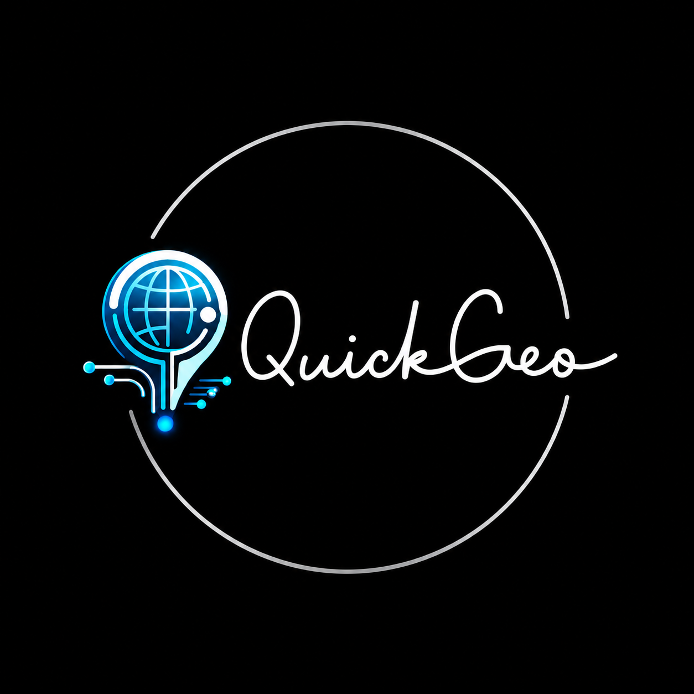

Quickgeo
Quickgeo
About Quickgeo
Your live window into global geopolitics.
Quickgeo is a live news channel dedicated to geopolitics — covering the latest developments in international relations, global conflicts, diplomatic affairs, political power shifts, and world affairs that shape our planet.
What We Cover
Our Mission
We believe geopolitical knowledge should be accessible to everyone. Quickgeo delivers timely, accurate updates for analysts, students, journalists, and curious minds who want to understand the forces shaping our world.
How It Works
Posts are published by our editorial team and categorised for easy browsing. Users can react to posts, save them for later, and share updates. The platform is available in 10 languages and supports dark mode.
Contact
Have a tip, a correction, or want to get in touch? Visit our Contact page.